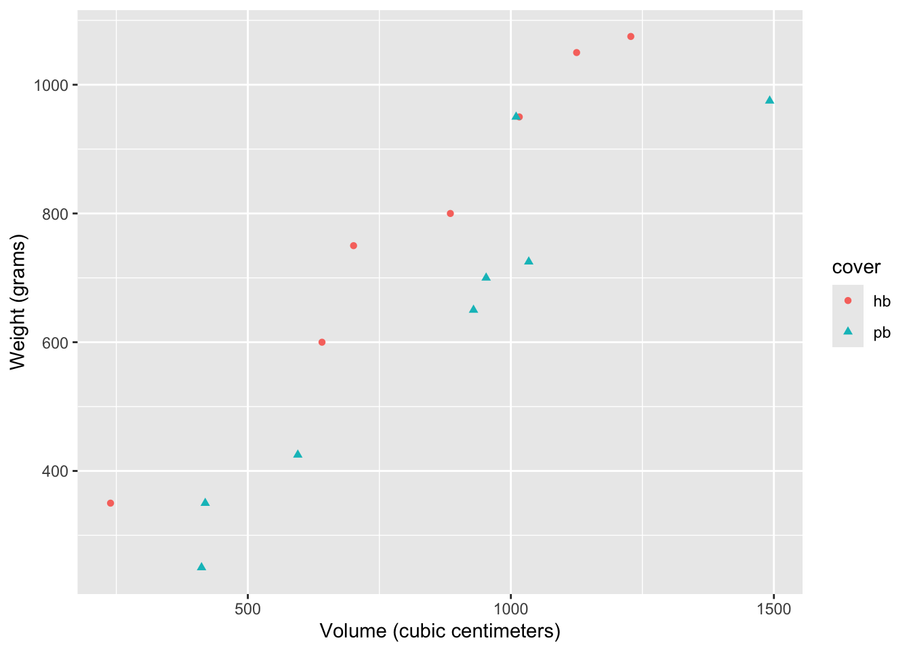
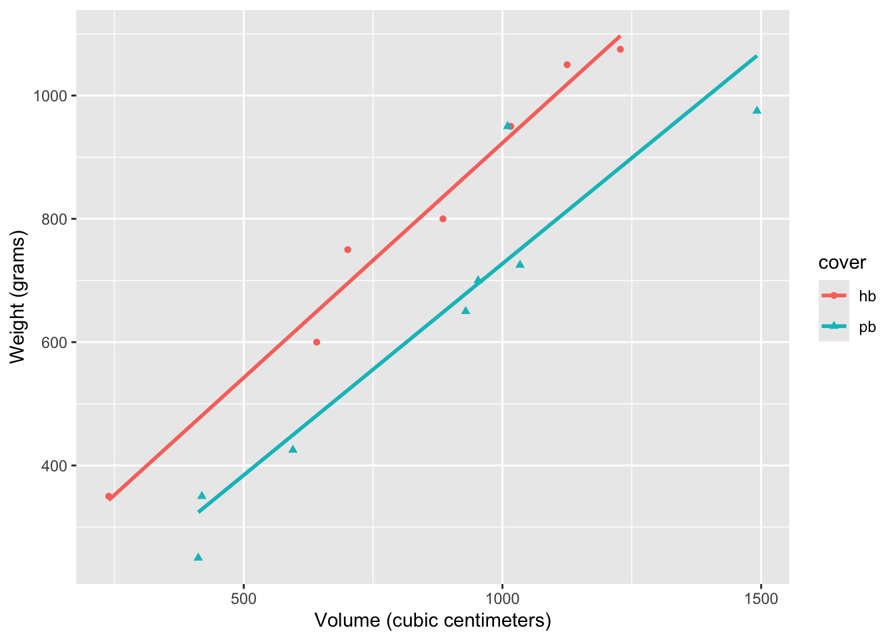

library(tidyverse)
library(tidymodels) Multiple linear regression (with two predictors)
The multiple linear regression model relates several predictors to a single response via a linear function with error. Here is what it looks like with two predictors:
\[ y=\beta_0+\beta_1x_1+\beta_2x_2+\varepsilon. \]
This primer leads you down the path of least resistance to fitting this model when one of the predictors (\(x_1\)) is a numerical variable and the other (\(x_2\)) is a categorical variable with two levels. You will learn how to…
- create a scatter plot of \(x_1\) versus \(y\) that differentiates between the levels of \(x_2\);
- add several best fitting lines to this plot;
- produce a table with the coefficient estimates (\(\hat{\beta}_0,\,\hat{\beta}_1,\,\hat{\beta}_2\));
- calculate \(R^2\) and adjusted \(R^2\) for assessing model fit.
Setup
The commands for plotting are in the tidyverse package, and the commands for working with linear regressions are in the tidymodels package, so we crank that up:
Next consider the dataset allbacks from the DAAG package (you may need to install this):
library(DAAG)
allbacks volume area weight cover
1 885 382 800 hb
2 1016 468 950 hb
3 1125 387 1050 hb
4 239 371 350 hb
5 701 371 750 hb
6 641 367 600 hb
7 1228 396 1075 hb
8 412 0 250 pb
9 953 0 700 pb
10 929 0 650 pb
11 1492 0 975 pb
12 419 0 350 pb
13 1010 0 950 pb
14 595 0 425 pb
15 1034 0 725 pbThe dataset has 15 observations and 4 columns. Each observation represents a book. Note that volume is measured in cubic centimeters and weight is measured in grams. More information on the dataset can be found in the documentation for allbacks, with ?allbacks.
We are interested in the relationship between book volume (\(x_1\)) and book weight (\(y\)), but as you can see if you view the spreadsheet, some of the books are hardcover and some are paperback. We might expect a hardcover book to weigh more than a paperback book with the same volume because of the different materials used, and so we should account for that.
Creating a grouped scatterplot
This code creates a scatterplot of volume vs. weight where the points have different color and shape depending on the value of cover:
ggplot(allbacks, aes(x = volume, y = weight)) +
geom_point(aes(color = cover, shape = cover)) +
labs(
x = "Volume (cubic centimeters)",
y = "Weight (grams)"
)
The only difference between this code and a simple scatter plot is that we included an aesthetic mapping aes(color = cover, shape = cover) inside the call to geom_point. You’re asking it to alter the color and shape of the points depending on the value of the variable cover. The computer then made some default choices for you about what the different colors and shapes will be.
Adding lines of best fit
If we want to add lines of best fit for each group, we just have to add one new layer to our code above:
ggplot(allbacks, aes(x = volume, y = weight)) +
geom_point(aes(color = cover, shape = cover)) +
geom_smooth(aes(color = cover), method = "lm", se = F) +
labs(
x = "Volume (cubic centimeters)",
y = "Weight (grams)"
)
Again, the only difference between this code and the code that would generate one line of best fit is that we added an aesthetic mapping aes(color = cover) to the arguments of geom_smooth, and the computer knows to plot several lines for each level of the variable cover, which only has two levels in this case.
As we expected, the line of best fit for the paperback books is below the line for the hardcover books, capturing our intuition that, for the same volume, a hardcover book will weigh a bit more.
Getting the actual coefficient estimates
This code will give you a table with the estimates:
weight_cover_fit <- linear_reg() |>
fit(weight ~ volume + cover, data = allbacks)
tidy(weight_cover_fit)# A tibble: 3 × 5
term estimate std.error statistic p.value
<chr> <dbl> <dbl> <dbl> <dbl>
1 (Intercept) 198. 59.2 3.34 0.00584
2 volume 0.718 0.0615 11.7 0.0000000660
3 coverpb -184. 40.5 -4.55 0.000672 So the fitted model is
\[ \begin{align*} \widehat{\text{weight}}&=\hat{\beta}_0+\hat{\beta}_1{\text{volume}}+\hat{\beta}_2{\text{cover}}\\ &\approx197.96+0.71\cdot{\text{volume}}-184.05\cdot{\text{cover}}. \end{align*} \] The interpretation of these estimates is:
- 197.96 is the weight you would predict for a hardback book with zero volume (it’s a little silly that this is not zero, which highlights one limitation of a linear model here);
- 0.71 is the amount (in grams) you would predict the weight to increase by if the volume of the book increased by 1 cubic centimeter (remember, slope = rise/run, so \(\Delta\text{weight}/\Delta\text{volume}\) in this case);
- -184.05 is the amount by which the line shifts downward (because it’s negative) to account for the fact that paperback books will typically be lighter than hardcover, even keeping the volume constant.
The only difference from the code for simple linear regression is that we added variables to the formula weight ~ volume + cover in the fit command. So in general, if you have a data frame df with columns y, x1, x2, and so on, you can fit a multiple linear regression with code that will look something like this:
my_regression_fit <- linear_reg() |>
fit(y ~ x1 + x2 + x3, data = df)To add more predictors, you just add them to the formula y ~ x1 + x2 + x3 + ....
Compute the \(R^2\) values
Once you have created a regression object with the code like linear_reg() |> fit(), you can view the \(R^2\) values with the glance function to assess the goodness-of-fit of the model. Here they are for the simple linear regression that just has volume as a predictor:
weight_fit <- linear_reg() |>
fit(weight ~ volume, data = allbacks)
glance(weight_fit)# A tibble: 1 × 12
r.squared adj.r.squared sigma statistic p.value df logLik AIC BIC
<dbl> <dbl> <dbl> <dbl> <dbl> <dbl> <dbl> <dbl> <dbl>
1 0.803 0.787 124. 52.9 0.00000626 1 -92.5 191. 193.
# ℹ 3 more variables: deviance <dbl>, df.residual <int>, nobs <int>Here they are for the multiple linear regression that has volume and cover as predictors:
weight_fit <- linear_reg() |>
fit(weight ~ volume + cover, data = allbacks)
glance(weight_cover_fit)# A tibble: 1 × 12
r.squared adj.r.squared sigma statistic p.value df logLik AIC BIC
<dbl> <dbl> <dbl> <dbl> <dbl> <dbl> <dbl> <dbl> <dbl>
1 0.927 0.915 78.2 76.7 0.000000145 2 -85.0 178. 181.
# ℹ 3 more variables: deviance <dbl>, df.residual <int>, nobs <int>We see that adjusted \(R^2\) increased substantially when we added cover as a predictor, supporting our intuition that including this covariate to the model ought to improve fit.